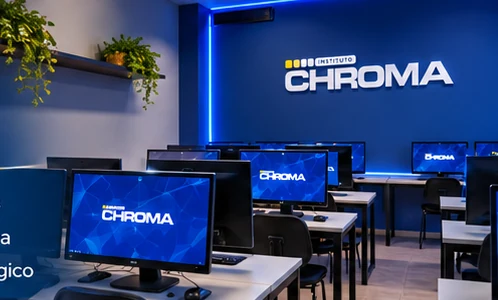
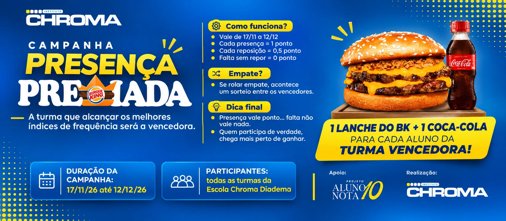

Compreender
Começamos por contextualizar, organizar conceitos e reconhecer o que cada estudante precisa desenvolver.
Na Chroma, aprender combina orientação, tecnologia e prática. Cada atividade é uma oportunidade de investigar, criar e desenvolver autonomia para além da sala de aula.

Na Chroma, cada sala, encontro e projeto faz parte de algo maior: criar condições para que o conhecimento encontre espaço na vida real.
Mais do que acompanhar mudanças tecnológicas, nossa proposta é cultivar curiosidade, autonomia e confiança para lidar com o que ainda está por vir.
Descubra nossa trajetóriaA aprendizagem se fortalece quando uma explicação encontra espaço para virar experiência — e quando existe alguém por perto para orientar o próximo passo.
Conheça nossa metodologiaComeçamos por contextualizar, organizar conceitos e reconhecer o que cada estudante precisa desenvolver.
Atividades guiadas e desafios aproximam teoria, tecnologia e situações que fazem sentido fora da sala de aula.
O acompanhamento ajuda a identificar dúvidas, rever processos e transformar dificuldades em novos aprendizados.
O objetivo não é apenas concluir uma tarefa: é ampliar a capacidade de aprender e seguir criando.
Uma interpretação visual da curiosidade, da colaboração e das possibilidades que inspiram nosso trabalho.

Ambientes e propostas que convidam o estudante a experimentar, fazer perguntas e construir caminhos próprios.
Imagem conceitual · não representa instalações reaisAs imagens desta seção são conceituais e não devem ser interpretadas como fotografias das unidades.
Ações educativas, reconhecimento e temas que aproximam a escola da comunidade. Cada iniciativa tem seu próprio propósito.

Uma iniciativa de valorização do desempenho e do compromisso com os estudos. Critérios e benefícios dependem do regulamento vigente.
Conheça a iniciativa
Uma campanha que coloca a frequência e a participação no centro da experiência escolar, reconhecendo o valor de estar presente.
Veja a campanhaA pesquisa, a história e o diálogo também fazem parte da aprendizagem e ampliam nosso olhar sobre a sociedade.
Conheça nossas açõesQueremos construir diálogos que aproximem educação, projetos e experiências. Escolas e empresas encontram aqui caminhos distintos para apresentar propostas.
Converse sobre ações pedagógicas, atividades, eventos e iniciativas compartilhadas.
Propor uma parceria escolar ↗ EMPRESAS E ORGANIZAÇÕESApresente ideias para encontros, vivências e conexões com novas áreas de atuação.
Propor uma parceria institucional ↗Conheça a presença da Chroma em São Paulo. Consulte os canais oficiais para confirmar endereços e disponibilidade de atendimento antes da visita.
Um espaço para vivenciar a proposta da Chroma e conhecer nossa rotina de aprendizagem.
Ver informações da unidade ↗Conheça os caminhos de atendimento e saiba mais sobre a presença do Instituto Chroma na região.
Ver informações da unidade ↗